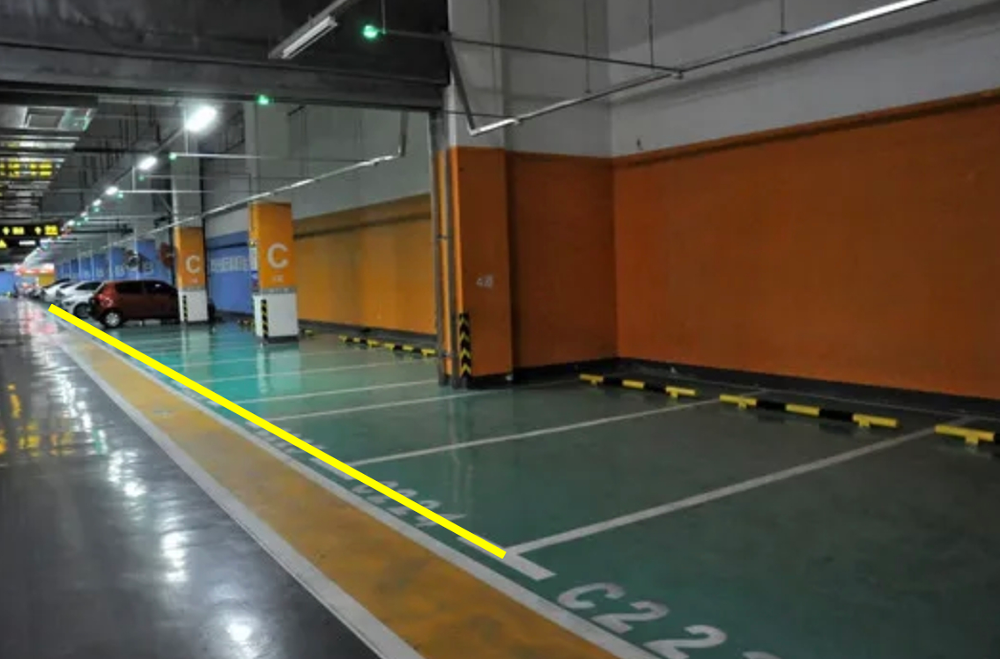
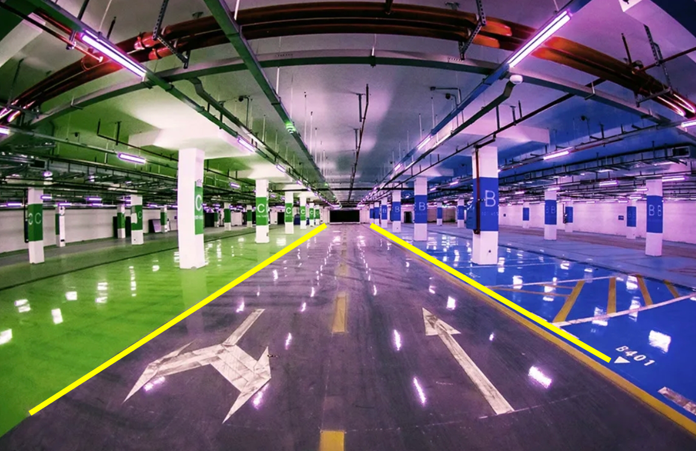
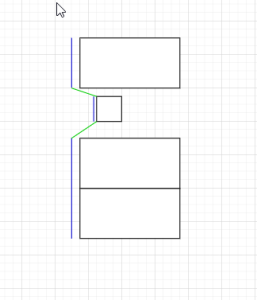
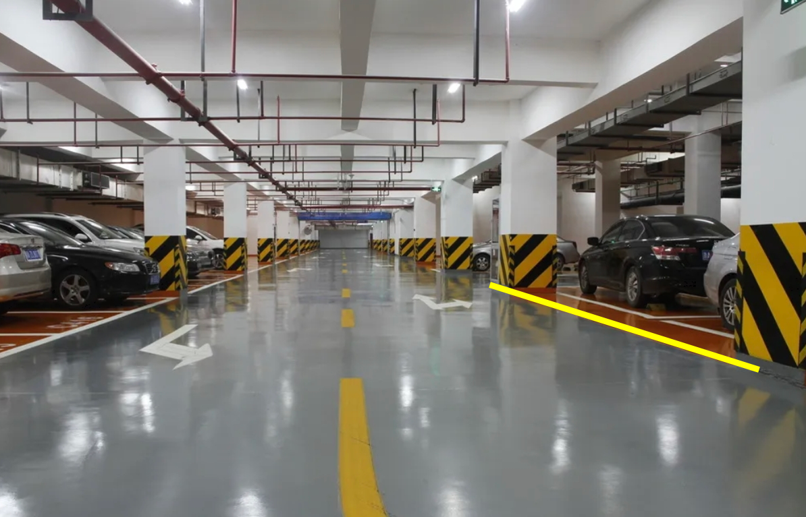
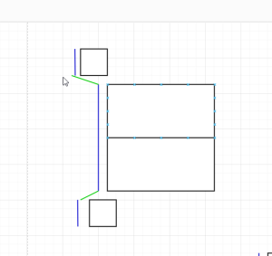
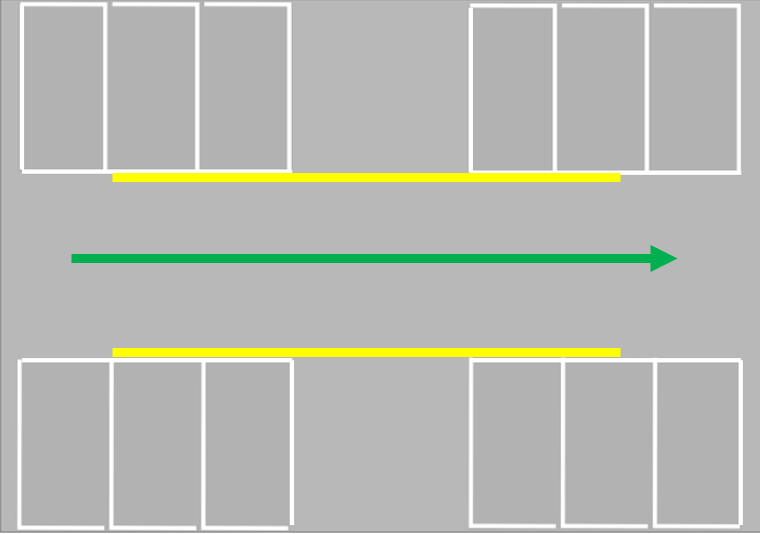
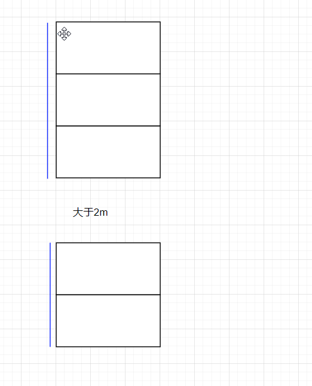
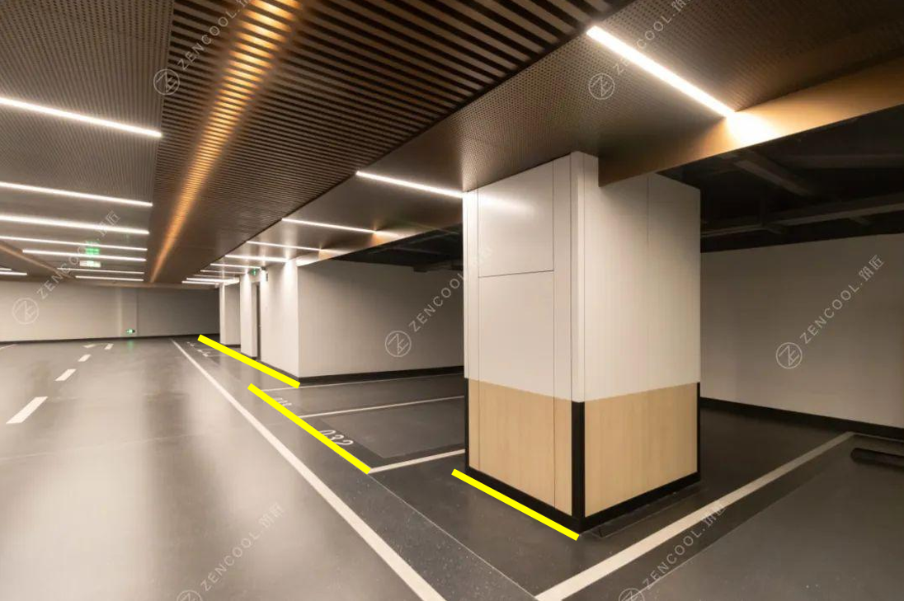
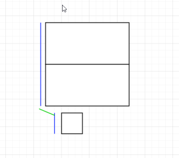

Road Edge effect
MAP hopes to recording environmental information faithfully. The ROAD EDGE of the Environment will look like.
The overall principle is that the less less than 2m will be connected, greater than 2m discomfort.
The blue thread will give, and the green line can be selected.
  
 
 
Turning is similar to execution, and it is not placed in the same paragraph more than a certain distance.
 